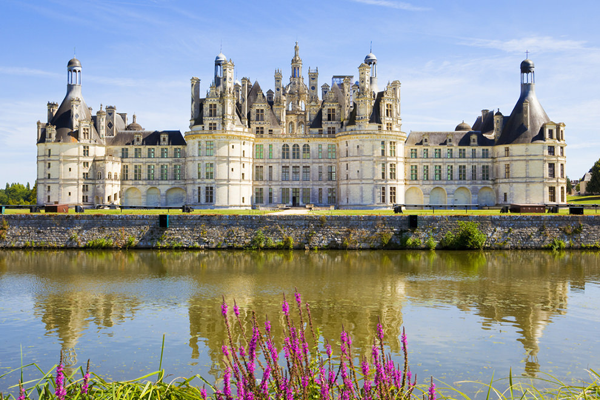

França
A França, localizada na charmosa Europa Ocidental, é um país que encanta com sua rica história e cultura vibrante. Com cerca de 67 milhões de habitantes, oferece paisagens deslumbrantes, desde os majestosos Alpes até as belas praias do Mediterrâneo. Cidades icônicas como Paris, repleta de museus e cafés charmosos, capturam a imaginação de todos que a visitam.
A Revolução Francesa, um evento crucial na história, não apenas transformou a política do país, mas também inspirou movimentos ao redor do mundo. A língua francesa é falada em diversos cantos do globo, refletindo a influência cultural da nação. Conhecida como um verdadeiro berço de arte, moda e filosofia, a França atrai milhões de turistas todos os anos, que vêm apreciar sua deliciosa culinária e vinhos renomados.
Além disso, o país desempenha um papel importante na União Europeia e é um defensor dos direitos humanos e da cultura. Combinando tradições ricas e inovações constantes, a França se revela um lugar fascinante e inspirador, que continua a cativar o coração de pessoas de todas as partes do mundo.
Mont Saint-Michel

Vale de Loire

Região da Provença